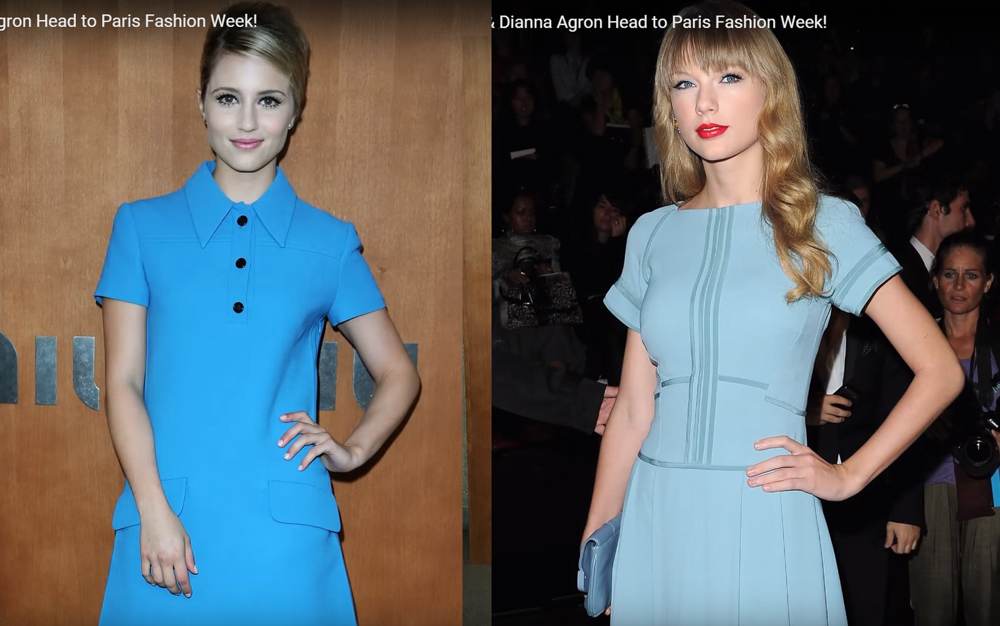
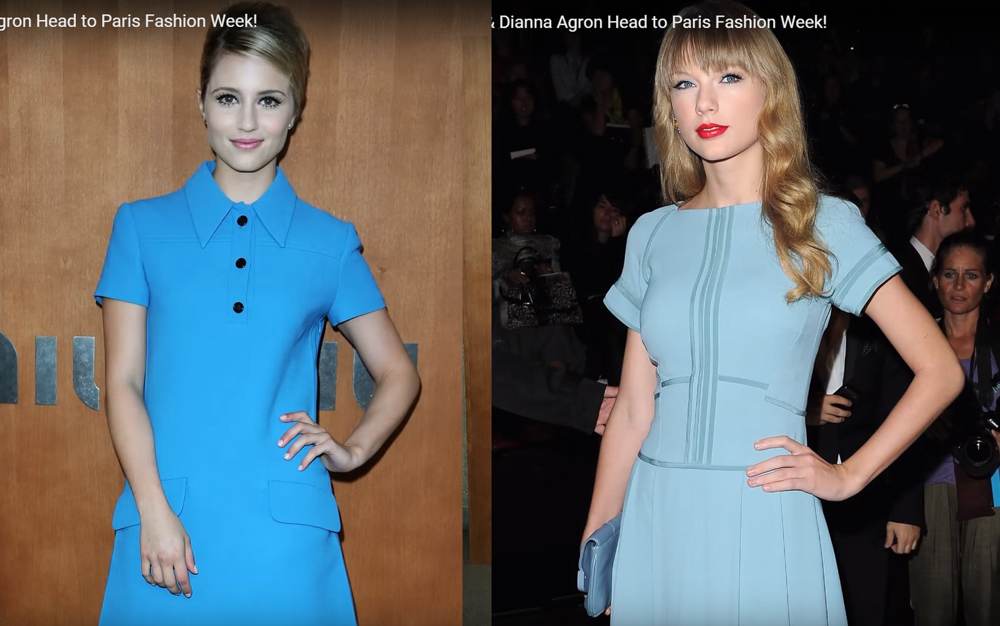

6. We Are the Foxes
DA从7月下旬出国工作，直到10月27号才回美国。
TS一个人度过了漫长的PR夏日。
10月1号，TS在法国巴黎拍< Begin Again >的MV。DA在哪呢？就在巴黎。
10月1号，DA的FB发了一张图，图什么时候拍的不知道，9月曾发过一次，跟DA生日那天TS的照片一对比，像得一脸。
10月2号，TS和Ashley还有Emma Stone在巴黎一家咖啡馆吃中饭，晚上据说有目击TS、DA、Ashley、Emma Stone一起吃晚饭，但没有照片。
10月3号，这4人傍晚都去看了巴黎时装周，合影不要指望有，DA和Emma Stone在一起，TS单独行动，Ashley没人关心……
 

10月4-8号，TS在伦敦。10月7号，TS和1D都参加了BBC Radio 1's Teen Award，在后台与1D有合影。
10月9号，有报道称TS取消了和1D某成员的晚餐。
10月12号在爱尔兰的节目Late Late show上，1D被问及“7号Taylor是否取消了和他们中的某个成员的晚餐”，HS说"I didn't get asked to dinner."没人邀我吃饭。
你们有没有想过“TS订了哪家餐厅又取消了”这种隐私性特别强的事如果是餐厅透露出去的，他们以后还怎么做生意，谁敢去？如果是TS身边的工作人员泄露出去的，这绝对要丢饭碗。而且"TS"在订座时竟然还告诉了餐厅她要和谁一起吃饭？又是一个明显的公关行为。
Kennedy那边还没收官结束， Haylor这边已经开始酝酿，还搞无缝衔接，真是一刻不得消停。
10月6号，TS发推说
{kind=link}
"I feel like I'd be more understood if people knew 'I Don't Want to Miss a Thing' by Aerosmith is how most of my emotions sound in my head."
“我想如果你们知道Aerosmith的< I Don't Want to Miss a Thing >这首歌就是环绕在我脑海中的情感的真实写照，你们会更懂我”
I Don't Want to Miss a Thing是一首很美，很浪漫，爱意满溢的歌。
点击显示完整歌词
I could stay awake just to hear you breathing
我可以不眠到天亮只为听你的呼吸
Watch you smile while you are sleeping
只为看你熟睡的笑脸
While you're far away dreaming
只为远远的看着你在作着美梦
I could spend my life in this sweet surrender
我可以用我的一生换你的温柔
I could stay lost in this moment forever
我可以永远陪伴着你
Every moment spent with you is a moment I treasure
和你在一起的每分每秒都是我珍爱的时刻
Don't want to close my eyes
我不想闭上眼睛
I don't want to fall asleep
我不想睡着
Cause I'd miss you baby
因为宝贝我想念你
And I don't want to miss a thing
我不想错过任何事情
Cause even when I dream of you
因为当我梦着你时
The sweetest dream will never do
好梦却从未成真
I'd still miss you baby
宝贝我依然思念着你
And I don't want to miss a thing
我不想错过任何事情
Lying close to you feeling your heart beating
躺在你身边感受着你的心跳
And I'm wondering what you're dreaming
我想知道你正做着怎样的梦
Wondering if it's me you're seeing
想知道在梦里是否看到了我
Then I kiss your eyes
我亲吻你的眼
And thank God we're together
感谢上天让我们在一起
I just want to stay with you in this moment forever
我只想和你在一起 此时此刻
Forever and ever
直到永远
I don't want to miss one smile
我不想错过你的微笑
I don't want to miss one kiss
我不想错过你的吻
I just want to be with you
我只想和你在一起
Right here with you, just like this
就这样和你在一起
I just want to hold you close
我只想紧紧抱着你
Feel your heart so close to mine
感受你的心贴近我的心
And just stay here in this moment
就这样在一起 在此时此刻
For all the rest of time
以及我俩的余生
TS和HS的碰面是10月7号的BBC Radio 1's Teen Award上，是TS发推的第2天，“打算一起吃饭又取消”的传闻都还未开始传，这时Haylor还未开始（10月19号GC还在辟谣，TS和HS是朋友，他们此前从未date过），而Conor更是8月底就没见过面了。
{kind=link}
这首热恋中的歌，TS心中满溢的爱是为谁？
10月12号，Ethel在被问及TS时还在夸她。
{kind=link}
10月22号，四专RED发行，DA发推祝贺，配图是EHC的播放界面。
{kind=link}
10月25号，放出TS已经和Conor分手的消息，报道1，报道2。
{kind=link}
10月25号，Kennedy家族公布将在12月3号举办RFK活动，活动中会为TS颁一个奖，应邀出席的还有DA。
10月25号，TS在8月份拍摄的滚石杂志出刊，滚石网站为这篇文章配了一个标题【Taylor Swift in Wonderland】。
{kind=link}
{kind=link}
10月27号，DA回美国了，和朋友们一起过万圣节，可是这扮相也太吓人了。老实交代，猫耳朵是从谁那偷来的？
11月7号，TS在伦敦（1D不在伦敦），在the bbc radio 3 studios有工作，从她离开酒店、去BBC、回酒店的街拍可以看到，她没有戴项链。当酒店门口聚集一堆粉丝和媒体时，她再次出门胸前很醒目的戴着纸飞机项链。
11月8号，TS在巴黎，面对粉丝和媒体依然高调的戴着纸飞机项链。
11月14号，TS在LA当X factor的表演嘉宾。11月13号1D在纽约参加完活动飞回伦敦，HS一个人飞LA去了X factor，据说是去陪TS，然后15号回到伦敦。从这天起，宣告Haylor正式开始。
11月14号，同一天，DA和她的“新男友”Christian Cooke手牵手亮相纽约街头。
11月18-19号，TS拍摄IKYWT的MV。
11月21-30号，TS在日本和澳洲。
11月30-12月1号，TS在LA。
11月28，one direction接受EXTRA采访
主持人一开始问他们有谁在dating，Zayn说"Me and Louis have girlfriends" "The rest of us are . . . single Pringles." Zayn和Louis有女朋友，其他人单身。
33秒左右主持人问any celebrity crush want to take out？
有没有哪个中意的女明星想约出来的？
HS摇头
这时候HS不是应该和TS“在一起”了吗，怎么还是单身？而且没有想约出来的celebrity crush，请问4天后连续一个月和TS秀恩爱是怎么回事？
从12月2号开始，进入Haylor密集轰炸期。
还记得TS在和Conor Kennedy“正式开始”两周前说：
"Stuff is about to happen
And I love you more than ever
Taylor"
无独有偶，Louis Tomlinson在和“女友” Eleanor Calder开始传绯闻时也发推说：
{kind=link}
"Always in my heart Harry Styles.
Yours sincerely, Louis"
还有一个经典视频，Louis牵着Eleanor的手离开，HS在后面用篮球砸他们，最后生气的坐到地上。
同是天涯沦落人，相逢何必曾相识
在TS和HS正式开始PR大戏的第一天，她穿上了狐狸衣服

THEY ARE THE HUNTERS, WE ARE THE FOXES
I KNOW PLACES WE WON'T BE FOUND
YOU KNOW FOR ME, IT'S ALWAYS YOU
I KNOW FOR YOU, IT'S ALWAYS ME